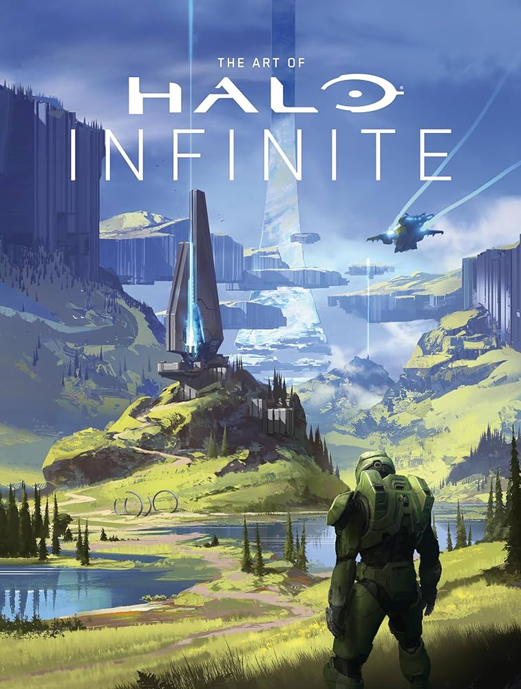

REGRESAR
HALO

Halo es una franquicia de videojuegos de ciencia ficción creada y desarrollada por Bungie Studios hasta Halo Reach, y gestionada ahora por 343 Industries, propiedad de Xbox Game Studios. La serie se centra en una guerra interestelar entre la humanidad y una alianza teocrática de alienígenas conocidos como Covenant. Más adelante se encontrarán más amenazas como los Floods y los Prometeos. El Covenant es guiado por sus líderes religiosos, los profetas, y adoran a una antigua civilización conocida como los Forerunners, quienes perecieron en combate con el parásito Flood. Muchos de los juegos se centran en las experiencias del Jefe Maestro John-117 (Master Chief), un súper soldado biológicamente mejorado, y su compañera inteligencia artificial (IA), Cortana. El término «Halo» se refiere a las mega estructuras Halo: grandes estructuras habitables en forma de anillos, instaladas en el espacio exterior.
Los juegos de la serie han sido considerados de los mejores Videojuegos de disparos en primera persona para videoconsola y es visto como uno de los juegos insignia de la consola Xbox1 Esto ha llevado a la competencia a generar los videojuegos llamados Halo Killers que compitan o aspiren a superar a Halo.2 Reforzados por el éxito de Halo: Combat Evolved y por la inmensa campañas de marketing de Microsoft, sus secuelas rompieron los récords de ventas.345 Desde el inicio de la saga en 2001 se han vendido más de 65 millones de copias, con un beneficio solo en venta de videojuegos superior a los 3.400 millones de dólares.678 A la comunidad de aficionados se le denomina Halo Nation. Gracias a esto Halo ha formado parte con gran rapidez de la cultura popular estadounidense, ya que ha sido referida en multitud de medios como cómics, libros, novelas gráficas, música, y cortometrajes.
El Covenant, sin conocimiento de la naturaleza destructiva de los anillos para hacer el gran viaje, intentan activar otra instalación Halo (la instalación 05) para llevar a cabo su profecía religiosa de la destrucción de la humanidad.10 Para ello, lanzan una invasión a la Tierra. Entre los defensores del planeta se encuentran el Jefe Maestro, el sargento Avery Johnson y la comandante Miranda Keyes. Una raza en el Covenant, los Sangellis (elites), se enteran de la verdad acerca de los anillos y se unen a las fuerzas humanas para evitar la activación de los Halos. Esta improvisada alianza tiene éxito y logran detener al Covenant. Sin embargo, la desactivación forzosa del anillo libera un protocolo de respaldo que prepara a todos los anillos para su detonación remota desde una ubicación: el Arca (The Ark).11 Aún sin conocer la verdad acerca de los anillos, el Alto Profeta de la Verdad Covenant y los remanentes leales al Covenant siguen su camino hacia la Tierra, donde creen que está enterrada el Arca. Una gran batalla es librada entre el Covenant, la humanidad y un ejército infectado por los Flood. Eventualmente, el Covenant es repelido y escapan a través de un túnel en el espacio, provocando una gran devastación en África y la erradicación de los Flood de la Tierra.